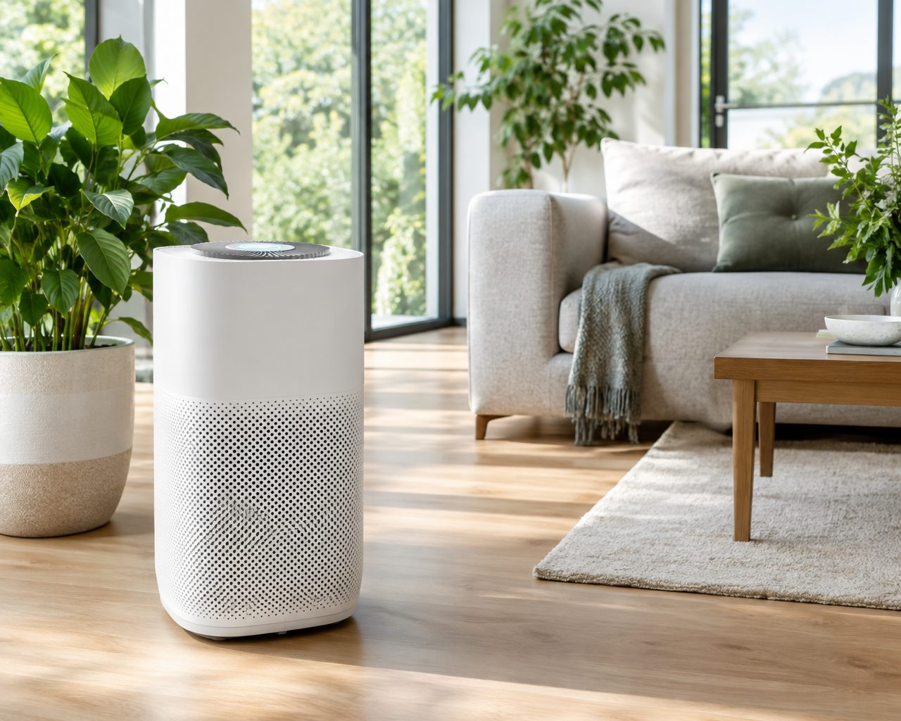
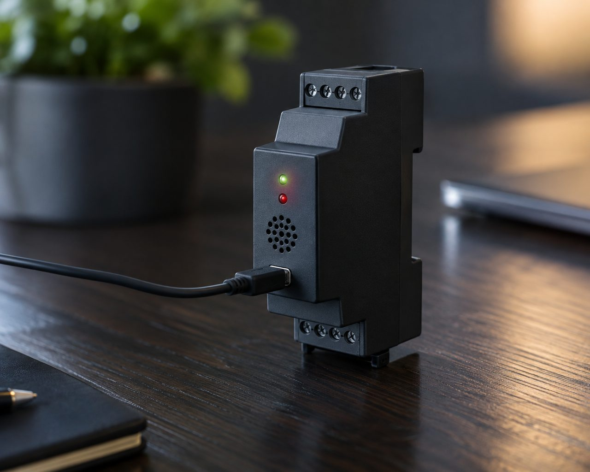
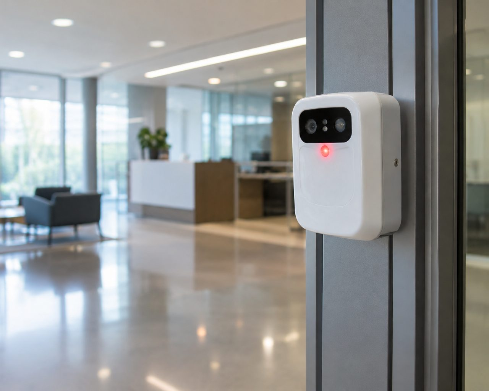

Plastic Recycling Furnace
Waste plastic is melted and extruded as plastic pellets in a cost-effective thermal furnace that runs on waste organic fuel instead of fossil fuels.
- No pollution, zero dioxins produced
- Recycles any type of plastic at lower cost than existing methods
- Less landfill, less air, water and land pollution

Air Purification
A fan draws air through filters that trap dust, pollen and bacteria, then returns clean air. The EPA estimates indoor air can be 2 to 5 times dirtier than outdoor air.
- Captures a high share of airborne allergens and irritants
- Steady supply of fresh indoor air
- Works best with cross ventilation and regular cleaning
CCTV Camera
Wireless cameras set up faster than wired ones, with no drilling through walls. Visible and infrared images, with the camera hidden from intruders.
- Connects to any computer or mobile
- Alarm when undesired activity is detected
- Flexible installation, not tied down by wires

iAlert (Intruder Alert)
An alarm that sounds if an intruder breaks in. It detects presence from 1 m away, even in pitch dark, using a technique an intruder cannot locate.
- Instant real-time alert on any remote computer
- Compact DIN-rail or stud mount, can hide behind a thin wooden panel
- Powered by a standard micro-USB mobile charger

Fever Alert
Place a hand under the unit. If there is a fever, a red light turns on with an audio alarm. No watchman required.
- Easy to use: runs from a mobile charger or power bank
- Easy to connect: pairs with a smartphone over USB
- Easy to install: snap-fits on a DIN rail, no electrical or internet cable